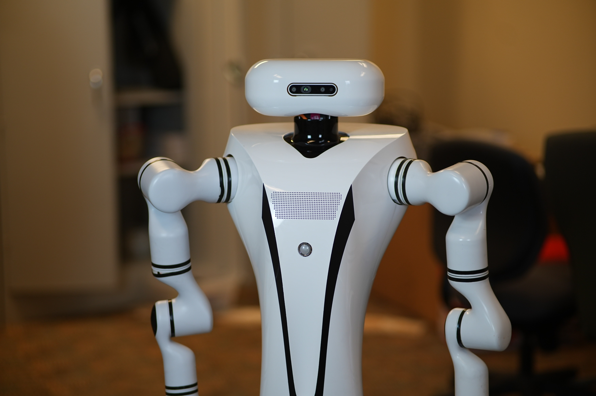
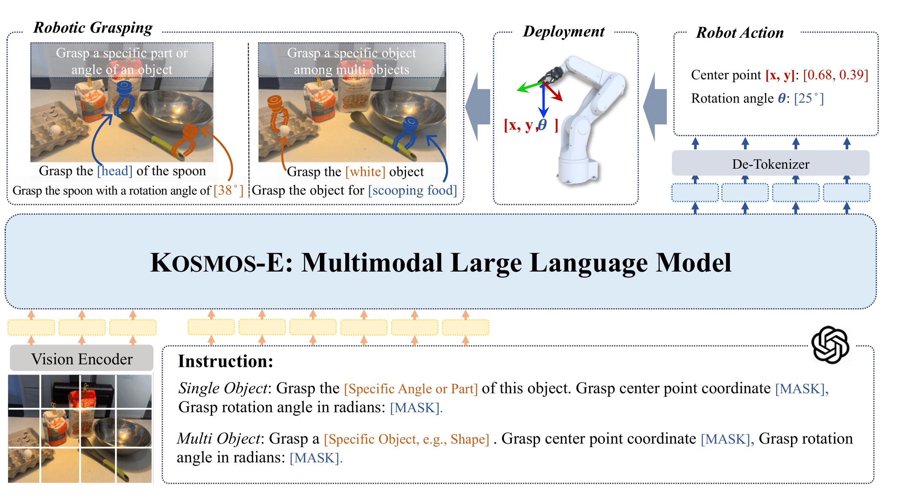

Zhi Wang,Yuchen Mo, Shengmiao Jin, Wenzhen Yuan
Under Review (ICRA), 2025.
Website / Paper / Video /
Proposed DoorMan, a mobile humanoid system that leverages haptics info to close-loop bimanually manipulate articulated objects in the wild.

Zhi Wang*, Xun Wu*, Shaohan Huang, Li Dong, Wenhui Wang, Shuming Ma, Furu Wei
IEEE International Conference on Intelligent Robots and System (IROS), 2024.
Website / Paper / Video /
Proposed KOSMOS-E, a Multimodal Large Language Model (MLLM) that leverages instruction-following robotic grasping data to enhance capabilities for precise and intricate robotic grasping maneuvers.